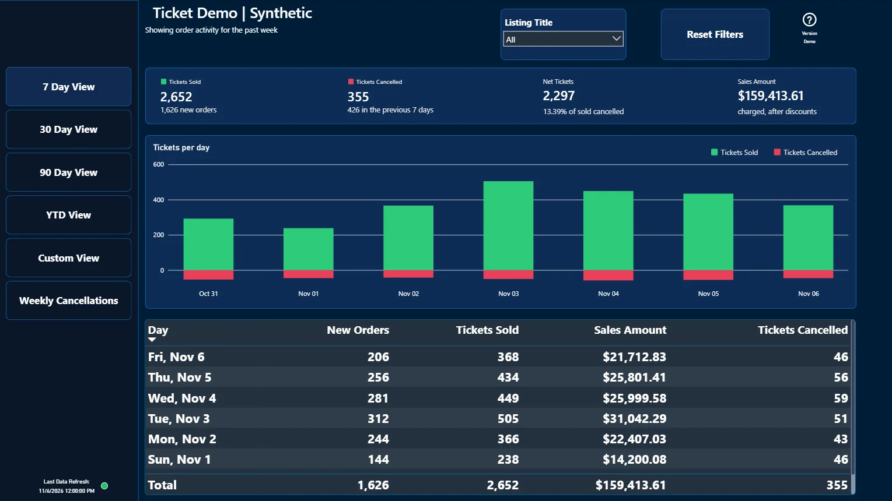
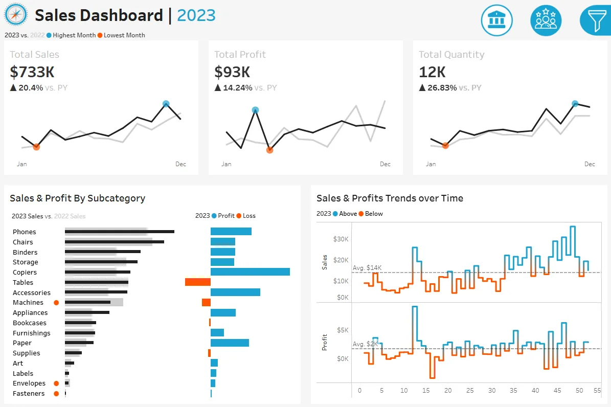
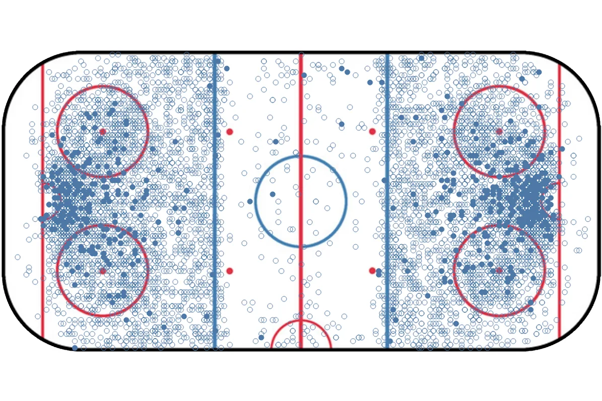

Collections Tracker
Weekly collections against goal by rep, with a goal-attainment ring, weekly and quarterly history, and a refund lookup.
Read the case study →I build dashboards in Tableau and Power BI, and the Python and SQL ETL pipelines that feed them. Background in computer science, with a focus on statistics and visualization.
Weekly collections against goal by rep, with a goal-attainment ring, weekly and quarterly history, and a refund lookup.
Read the case study →
Executive view of partner audience scores by event: ranked strength, a timeline with threshold bands, and a map. Selecting an event filters the rest.
Read the case study →Follows promo codes from ticket purchase to class attendance: a funnel, ticket mix, buyer rate by promo type, and searchable code-level detail.
Read the case study →
Daily ticket sales and cancellations by market across 7/30/90-day, YTD and custom windows, plus a weekly cancellation trend.
Read the case study →
Sales and customer KPIs for an office supply company. (Guided by Data with Baraa on YouTube.)
View on Tableau Public ↗
Every goal, shot on goal, and missed shot by Lightning players across the 2024–25 regular season.
View on Tableau Public ↗